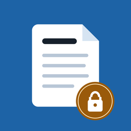

TOMBO・yanma 互換のメモアプリ（Windows）
Windows のメモソフト TOMBO・yanma と同じ形式のメモフォルダを読み書きできるメモアプリです。iPhone 版・Android 版の Sekirei と同じ画面・同じ使い勝手で、Windows でも使えます。無料です。
iPhone 版は こちらをご覧ください。
TOMBO・yanma はそれぞれ別の作者によるソフトウェアです。Sekirei はそれらと同じファイル形式を扱う非公式のアプリで、各作者とは関係ありません。
どれか 1 つをお使いください。中身は同じです。ふつうは Microsoft Store 版がおすすめです。
| 形式 | 使い方 |
|---|---|
| Microsoft Store | Microsoft Store の「Sekirei win」のページから入手します。新しい版が出ると自動で更新されます。下の「PC が保護されました」の画面も出ません。 |
| インストーラー（MSI） | ダウンロードして開くとインストールされ、スタートメニューとデスクトップに Sekirei が追加されます。管理者権限は要りません。 |
| zip | 好きな場所に展開し、中の Sekirei.exe を起動します。インストールが許可されていない PC でも使えます。 |
対応：Windows 10・11（64 ビット）。実行に必要なものはすべて同梱しているので、Java などを別に入れる必要はありません。
MSI・zip の Sekirei には有料の署名を付けていないため、初めて開くときにこの画面が出ることがあります。「詳細情報」を押し、「実行」を押してください。
Microsoft Store 版は自動で更新されます。MSI の場合は、新しい MSI をそのまま開くと上書きされます。zip の場合は、新しい zip を展開し直してください。メモと設定はそのまま残ります。
Microsoft Store 版を入れてから、MSI 版をアンインストール（zip の場合は展開したフォルダを削除）してください。メモはそのまま使えます。Microsoft Store 版を初めて起動したときに、もう一度メモフォルダを選ぶ必要があることがあります。
Microsoft Store 版と MSI で入れた場合は「設定 › アプリ › インストールされているアプリ」から Sekirei（Microsoft Store 版は「Sekirei win」）をアンインストールします。zip の場合は、展開したフォルダを削除します。どれもメモは消えません。
TOMBO・yanma で設定したものと同じパスワードを入力してください。日本語のパスワードにも対応しています。パスワードを忘れた場合は、誰にも開けません。
使えます。同じメモを同時に変更した場合は、内容を失わないように Sekirei 側の内容を「タイトル (Windows).txt」として別名で保存します。内容を見比べて、不要な方を削除してください。
絵文字など、Shift_JIS で表せない文字が入っています。その文字を消すか、UTF-8 で保存してください。UTF-8 で保存したメモは、TOMBO 本家では文字化けします。
Sekirei で削除したメモやフォルダは、Windows のごみ箱に移ります。ごみ箱から元に戻せます。
保存しません。一度入力したパスワードは、ウィンドウを最小化するか Sekirei を閉じるまでの間だけ覚えています（設定で、最小化しても覚えておくようにもできます）。
不具合のご報告やご要望は、メールでお知らせください。
appyokohama@broad-saito-5368.fool.jp
お使いの Windows のバージョン、アプリのヘルプ画面に出ているバージョン・ビルド、どの操作で起きたかを書き添えていただけると助かります。メモの内容やパスワードは送らないでください。